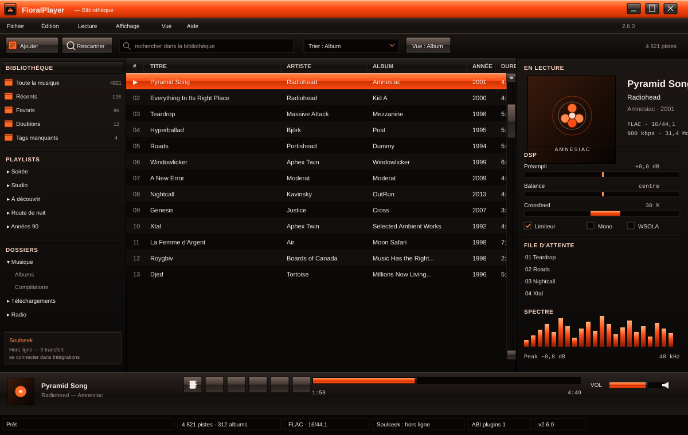

Bibliothèque et lecture
Colonnes configurables, recherche par champs, playlists, file d’attente, paroles synchronisées, reprise de session et glisser-déposer depuis l’Explorateur.
Votre musique reste sur votre disque.
Un lecteur de bureau inspiré de foobar2000 : bibliothèque rapide, formats lossless, traitement audio, playlists, thèmes et un système de plugins DLL. Sans compte, sans abonnement, sans service à installer à côté.
Téléchargement depuis les releases GitHub. Le lien ouvre toujours la dernière version publiée.

assets/.Colonnes configurables, recherche par champs, playlists, file d’attente, paroles synchronisées, reprise de session et glisser-déposer depuis l’Explorateur.
ReplayGain, préampli, balance, limiteur de crêtes, crossfeed, downmix mono, gapless, crossfade et vitesse de 0,5× à 2× avec conservation de la hauteur.
Discord Rich Presence, ListenBrainz, recherche et téléchargement Soulseek, télécommande LAN. Chaque intégration reste désactivable et ne bloque jamais la lecture.
Les plugins sont des DLL chargées au démarrage. La macro declare_plugin!
produit la table d’entrée ember_plugin_v1 ; les données traversent la
frontière en JSON UTF-8. Aucun unsafe n’est nécessaire dans un plugin.
Le SDK décrit le cycle de vie, les événements de lecture, les actions, la persistance et les limites réelles de l’interface.
À lire avant d’installer une DLL
Une DLL s’exécute dans le processus du lecteur, sans bac à sable, sans signature et sans manifeste de permissions. Elle peut lire vos fichiers et vos réglages. N’installez que du code dont vous connaissez la source.
Windows 10/11 64 bits. Aucun compte. Vos fichiers, vos réglages, votre bibliothèque.